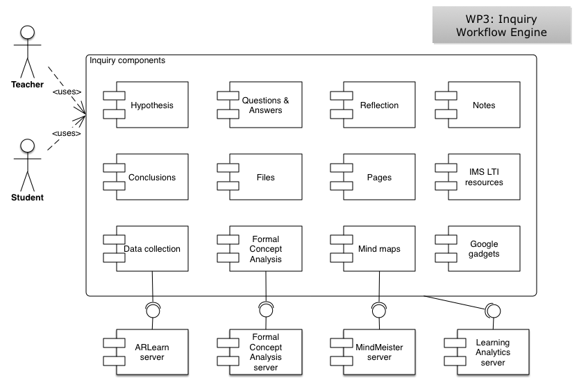

weSPOT Inquiry Workflow Engine
The Inquiry Workflow Engine is the base system for the whole weSPOT inquiry toolkit. It defines the inquiry components and processes, as well as offers a specified list of functionality via an Application Programming Interface (API) to WP4 and WP5 to implement mobile and collaborative inquiry support. It has been developed by re-using and extending the open-source social networking framework Elgg (http://www.elgg.org).
The following diagram shows the architecture of the Inquiry Workflow Engine. Users (teachers and students) interact with a number of inquiry components, which are available as widgets. These components are used within particular phases of an inquiry and enable teachers and students to create and edit hypotheses, questions, answers, notes, reflections, mind maps, etc. Some of these components communicate with the web services APIs offered by external components.
The Inquiry Workflow Engine enables its users to create mashups of their preferred inquiry components, assign them to different phases of an inquiry, share them with other users and use them collaboratively in order to carry out an inquiry. When creating a new inquiry, users are provided with a set of recommended inquiry components for each phase of the inquiry. They can then customise these sets of components by adding, removing, or arranging inquiry components for each phase of the inquiry.
